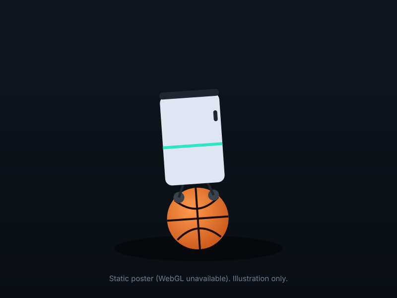

A robot on a ball, steered by physics plus a little learning
What: a ballbot controller that is a textbook LQR with a small learned correction on top. Why: the physics alone is precise but fragile, learning alone is robust but inexact, and the combination keeps the best of both when the robot is pushed, driven over bumps or rebuilt in a different size.
Drag to orbit. Click the robot to poke it. Illustration, not a simulation: the lean follows the derived law θ = κa and the wobble is a scripted damped oscillator.
What the recommended controller does
Each number is a range over training seeds, measured on 11 robot designs with randomised mass, friction, torque, damping, latency and noise. Hover a dotted term for its definition.
Speed tracking at 0.3 to 0.9 m/s over the 3 recommended checkpoints (g34; values in data/study.json, key motion), with zero falls; above 1.00 means a slight overshoot at 0.6 and 0.9 m/s, when the higher authority is switched on by the start-up acceleration (S112). The previous checkpoints (g26) reached 0.85 to 1.00. This is the LQR's precision, kept because the learned part has limited authority.
Goal success over the 3 recommended checkpoints (g34: motion layer, adaptive authority, goal dead band). The previous checkpoints (g26) reached 0.73 to 0.74 and 0.45 to 0.46. Without the ball arrestors the earlier recipe reached 0.58 to 0.60 and 0.29 to 0.30; pure learning 0.44 to 0.51 and 0.26 to 0.27 (both on the old contact model, a valid 8 s comparison).
A forward ToF sensor on the head, a planner with smooth motion and the motion layer, on a recommended checkpoint (one seed). A quarter less heading wobble than without the layer (1.31 against 1.74 rad/s for the previous checkpoint). A perfect map reaches 0.94, the previous checkpoint 0.84, a blind controller 0.09. With pushes and pulls 0.56.
Protocol: MuJoCo-Warp float32 GPU engine, 100 Hz, domain randomisation and observation noise on, goal task with pushes of 5 to 20 N for 50 ms and pulls of 3 to 12 N for 0.5 to 2 s; seeds as stated on each card. Full tables on Results, chapter 10b; definitions on Setup and method.
Four pieces, one recipe
Derive the physics first, let a network correct what the model gets wrong, keep the body on the ball mechanically, and plan around what cannot be climbed.
LQR on a derived model
A planar Euler-Lagrange model of ball, body and wheels, linearised and given per-design gains. A velocity reference governor limits acceleration to 0.5 m/s2, an integral term removes steady error, and a yaw loop turns the robot.
Q = diag(1e-6, 50, 1, 1), R = 1A bounded PPO residual
A policy trained with PPO adds a correction to the LQR action, scaled by an authority that switches between 0.15 while cruising and 0.3 when manoeuvring (S112). It learns what the planar model leaves out: contact, saturation, the differences between designs.
a = clip(a_LQR + α(t) a_policy), α in [0.15, 0.3]Three ball arrestors
In 95 percent of falls before this change the body derailed off the ball at about 15 deg of tilt; motor saturation was under 1 percent. Three passive 8 mm rollers at a 100 deg polar angle, touching the ball only at the loaded seat, keep it on.
Rezero-style, passive, S79A planner over a sensed map
Steps above the traction limit cannot be climbed, so a planner builds a map from a forward ToF sensor and steers around them with a smooth follower, aiming the sensor where it is going next. A motion layer between planner and controller smooths the commands, brakes into the goal and holds it.
heading-rate RMS 1.31 rad/s with the layer, S114LQR + (0.15 to 0.3) × residual + arrestors + motion layer + planner
Trained on 11 robot designs with domain randomisation at scale 1.75, 200M steps, with the motion layer in the loop (checkpoints g34, S113). How the pieces talk to each other is on the Controller page.
Seven pages, in the order they make sense
Each page opens with its own TL;DR. Read in order, or jump to what you came for; the nav keeps the numbering.
The robot and its physics
The derived planar model, Froude scaling, the LQR and the lean law, with live plots.
03 controllerThe controller
LQR, learned residual, arrestors and navigation layer: how the pieces talk, and the training setup.
04 resultsResults, chapter by chapter
The journey from the baseline to the recommended controller, with the honest nulls.
05 rulesRules and bounds
The constraints we established as rules: each with its equation, its evidence and what it means for a real robot.
06 lessonsLessons
Development lessons worth carrying forward, from engine invariants to where a sensor should look.
07 mediaVideos
Rollouts of the controllers with the command and the achieved velocity shown.
★ referenceGlossary
Every defined term in one place. Dotted terms across the site link here.
Simulation only, with the failures left in
Scope
- Everything is MuJoCo simulation (MuJoCo-Warp, float32, GPU). No hardware was built or tested, and nothing here is a hardware claim.
- Results before the engine correction (log entries S69 and S70) are not used; an earlier randomisation step had corrupted the physics.
- Most rows are 1 to 3 training seeds. A fall rate over 64 worlds has a standard error up to 0.06.
What failed
- Pushes and pulls cut goal success by about 0.27, 0.77 to 0.79 down to 0.51 to 0.52. Short pushes are absorbed fully and sustained pulls up to about 3 N too; at 3 to 12 N, 36 percent fall even on flat ground. Training on 1.5 and 2 times stronger disturbances did not help S113, S116.
- Steps and bumps above the traction limit hmax = r(1 − cos(arctan μ)), about 0.29 r, fail 90 to 98 percent at any speed. A perfect height map or a depth sensor does not reduce those falls S87, S88.
- A tenth-torque design is motor limited for every controller, at most 0.30 S85-R; the light-ball design kb025 falls on flat ground by sliding off its ball within the first second, the one flat-ground weakness that survived the S98 correction S92, S98.
- Training the policy with the planner in the loop changed nothing S91.
- Three designs stay hard on flat ground: the light ball kb025 (0.25 times the ball mass), the heavy body bal4 (4 times the ballast) and the weak motors of tau6 (6 N m against 30). A higher tracking reward, extra training share for these designs, twice the training steps and harder training pushes all failed to improve on the recommended recipe S113 to S116.
What held up
- The LQR base carries the policy to an unseen 1.5x robot: 0.61 to 0.71 goal success, where pure learning collapses to 0.09 to 0.15 S85-R.
- The authority dial is a real trade-off: 0.15 gives tracking 1.01 and robust success 0.35; 0.5 gives 0.85 and 0.47; pure learning 0.74 and 0.50 S82, S83.
- Obstacle falls depend mostly on obstacle size; on the corrected contact model they also rise with approach speed (0.28 at 0.1 m/s to 0.51 at 0.9 m/s); whether a speed layer that slows before a feature reduces them is under re-test, because the first measurement used episodes too short for a slowed robot to reach its feature S87, S100, S103.
docs/research/tracking_study_log.md:
- S79: why the robot falls, and the Rezero-style ball arrestors.
- S82, S83: the authority curve with the arrestors, and the recommended controller.
- S84: three seeds of the recommended controller; depth sensor on top of it.
- S98, S99, S102: the contact-model correction (wheel-ball free-rolling friction 0.001 to 0.01) and the three recommended g26 checkpoints retrained on it; headline tracking and goal numbers are their ranges.
- S85-R: unseen robot designs, corrected design vector.
- S87, S88, S100, S103: obstacle falls against size and speed; the traction limit and ball size; the speed correction on the corrected contact model; the speed layer (worth 0.03 to 0.05 of falls once exposure is controlled).
- S104 (with S89, S90): navigation around unclimbable blocks with the ToF head sensor on the recommended checkpoint.
- S89, S90: navigation around unclimbable blocks; smooth motion with a real sensor.
- S91: training with the planner in the loop, a null result.
- S105, S106, S110 to S113: why the paths wobbled; the motion layer, bolted on (worse) and trained with (better); adaptive authority and the goal dead band; the recommended g34 checkpoints and their flat tracking and battery ranges.
- S114, S115, S116 and their addenda: navigation with the motion layer; the contact escape on the new controller; the hard designs on flat ground; the variants that did not help; the sustained-pull sweep.
- S116 addendum: short pushes are absorbed; sustained pulls are absorbed up to about 3 N; at 3 to 12 N 36 percent fall on flat ground.
- S92, S98: flat-ground driving rate after the map-edge correction; the light-ball design's unseating, the one flat-ground weakness left after the S98 contact-model correction (the 20 s standing numbers of S93 to S97 are void).